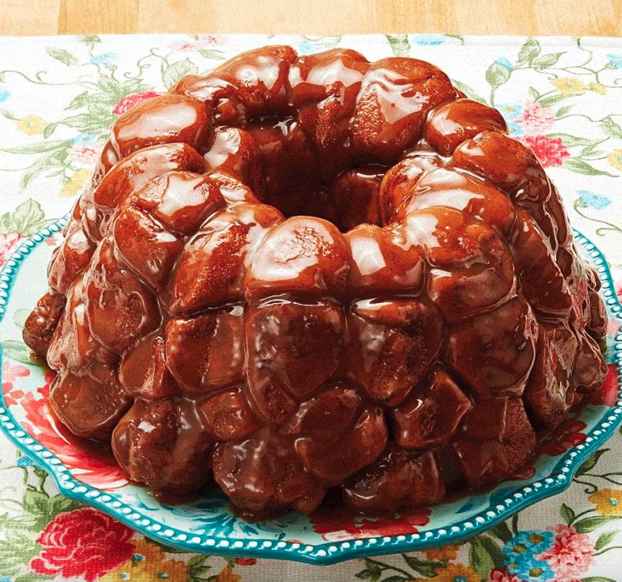
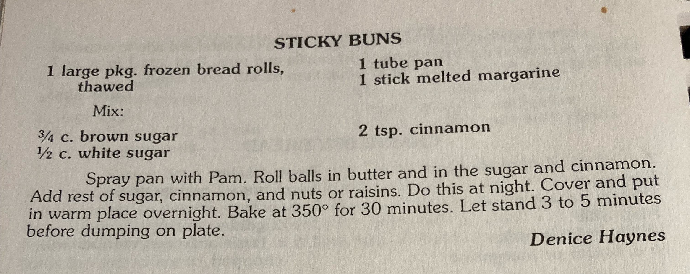

Monkey Bread

Description
My mom always made a version of this diabetic shock incarnate on Christmas mornings, even after being diagnosed with Celiac disease. Best eaten while still unshowered in your PJs, paired with a mimosa or two.
This recipe was simplified from The Pioneer Woman's recipe, here.
Ingredients
- 3 cans buttermilk biscuits (the non-flaky ones)
- 1 cup granulated sugar
- 2 to 3 tsp. cinnamon
- 1 cup butter
- 1/2 cup brown sugar
Steps
- Preheat the oven to 350°F. Open up all 3 cans of biscuits and cut each biscuit into quarters.
- Combine the white sugar with 2 to 3 teaspoons of cinnamon. (3 teaspoons of cinnamon gives it a fairly strong cinnamon flavor. If you're not so hot on cinnamon, cut it back to 2 teaspoons.) Dump these into a 1 gallon zip-top bag and shake to combine.
- Drop all of the biscuit quarters into the cinnamon-sugar mixture. Once all the biscuit quarters are in the bag, seal it and give it a vigorous shake. This will get all those pieces unstuck from one another and nicely coated with cinnamon-sugar. Spread these nuggets out evenly in the Bundt pan.
- At this point, you're going to want to melt the butter together with 1/2 cup of brown sugar in a saucepan over medium-high heat. This can be light or dark brown sugar. Cook butter-sugar mixture, stirring for a few minutes until the two become one. Once the brown sugar butter has become one color, you can pour it over the biscuits.
- Bake for about 35 to 40 minutes until the crust is a deep dark brown on top. When it's finished cooking, remove it from the oven. If you have the willpower, allow it to cool for about 15 to 30 minutes before turning it over onto a plate.
Want the actual family recipe? Check out the image below.

Back to Index